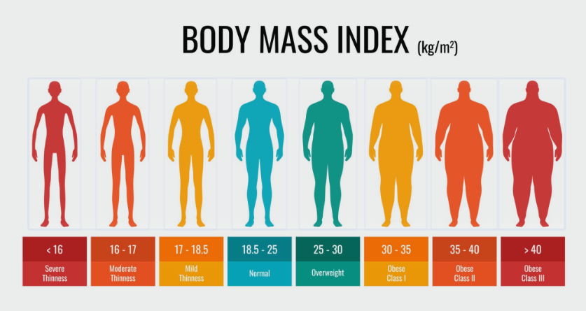

What is Body Mass Index (BMI)?
BMI stands for Body Mass Index. It is a simple index of weight-for-height that is commonly used to classify underweight, overweight and obesity in adults. It is defined as a person's weight in kilograms divided by the square of his height in meters (kg/m²).
It is an international standard used to estimate body fat and determine whether a person is within a healthy weight range.
1. The BMI Calculation Formula
The calculation method is very straightforward. The formula is:
Example Calculation:
If a person weighs 65kg and is 1.7m (170cm) tall, the calculation is:
65 ÷ (1.7 × 1.7) = 65 ÷ 2.89 ≈ 22.49
So, this person's BMI is approximately 22.5.
2. International Standard Ranges
According to the World Health Organization (WHO), BMI values are categorized into several ranges. Refer to the visual chart below to see the body shapes associated with different ranges:

Source: World Health Organization BMI Categories
Here is a summary table based on the standard ranges:
| BMI Value | Classification | Health Risk |
|---|---|---|
| Less than 18.5 | Underweight | Malnutrition, lower immunity (Increased risk) | }
| 18.5 – 24.9 | Healthy Weight | Lowest risk |
| 25.0 – 29.9 | Overweight | Increased risk of cardiovascular disease |
| 30.0 or above | Obese | High risk for chronic diseases like hypertension and diabetes |
3. Why should we care about BMI?
For most people (especially teens in growth), BMI is a good early warning indicator:
- Monitor Health: It helps us quickly assess if we are within a healthy weight range.
- Prevent Disease: A BMI that is too high is linked to hypertension, Type 2 diabetes, and heart disease. A BMI that is too low can mean anemia or osteoporosis.
4. Limitations of BMI (Crucial!)
While convenient, BMI is not perfect because it does not distinguish between fat and muscle mass.
- Athletes/Fitness Enthusiasts: Muscle is denser than fat. A person who exercises regularly or plays basketball might have a high BMI due to muscle mass, but this does not mean they are obese.
- Growing Teenagers: During puberty, the body develops rapidly, and bone/muscle changes affect the value. Therefore, specialized "Teen BMI Percentile Charts" should be used for reference.
5. How to maintain a healthy BMI
If you find that your BMI is not in the normal range, you can try adjusting through:
- Balanced Diet: Reduce intake of high-sugar, high-fat foods. Eat more vegetables and protein.
- Regular Exercise: Combine aerobic exercise (running, swimming) and strength training (push-ups, basketball practice).
- Adequate Sleep: Lack of sleep affects metabolism, causing abnormal weight fluctuations.